Environment Artist
Massive Entertainment / Ubisoft
Release Date: 15 Mar, 2019
Seven months after a deadly virus struck New York, agents of The Division head to a fractured and collapsing Washington, D.C. to take back the nation's capital in this online open-world action RPG shooter.
Transformations
The Situation Room
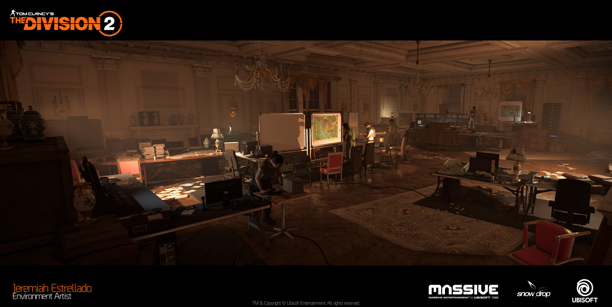
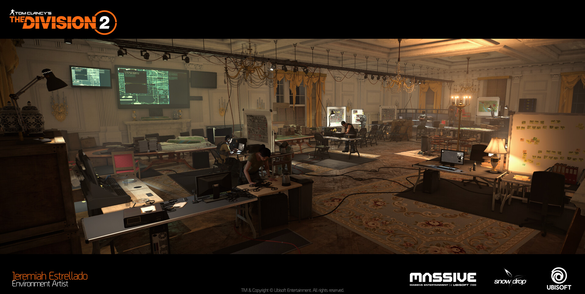
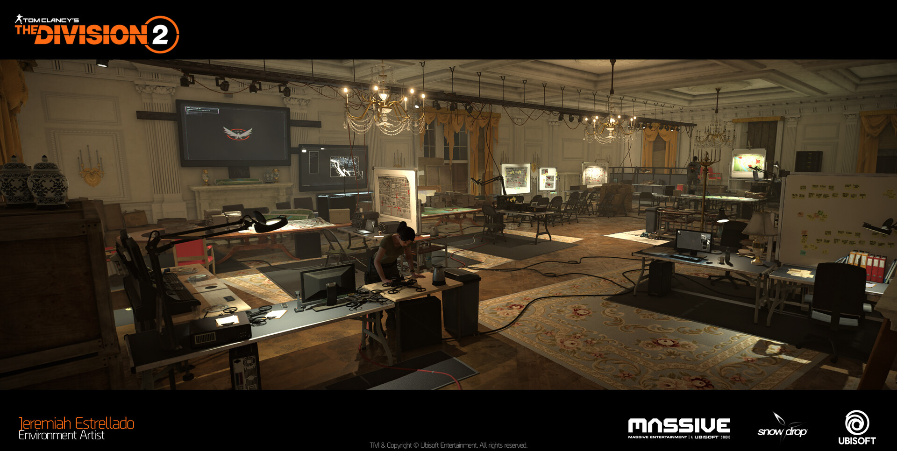
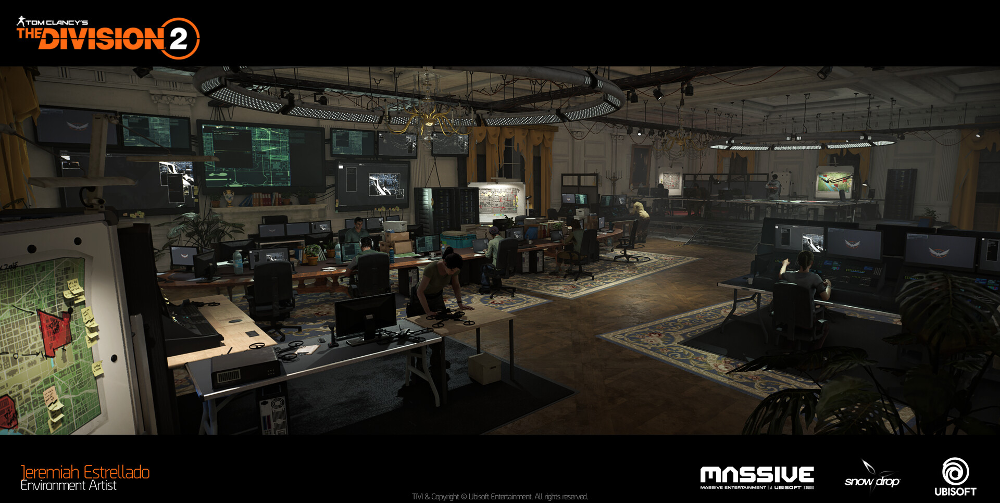
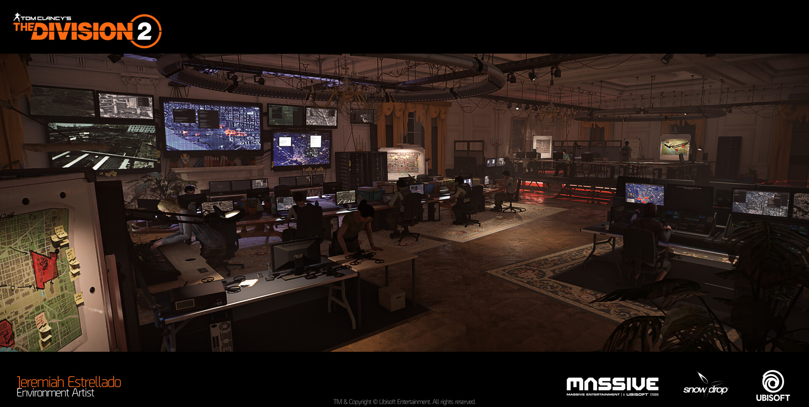
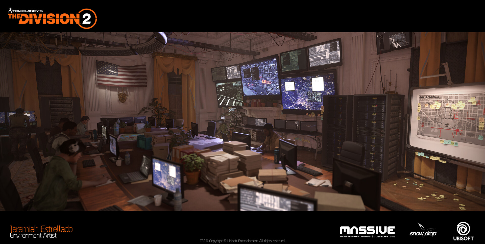
Basement Corridor
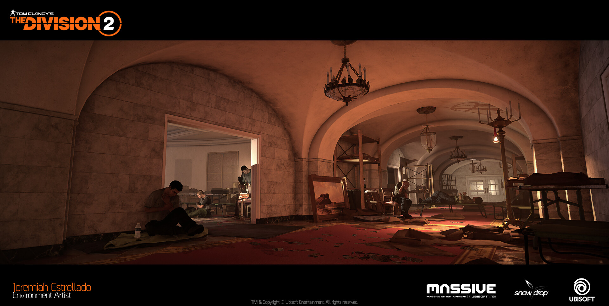
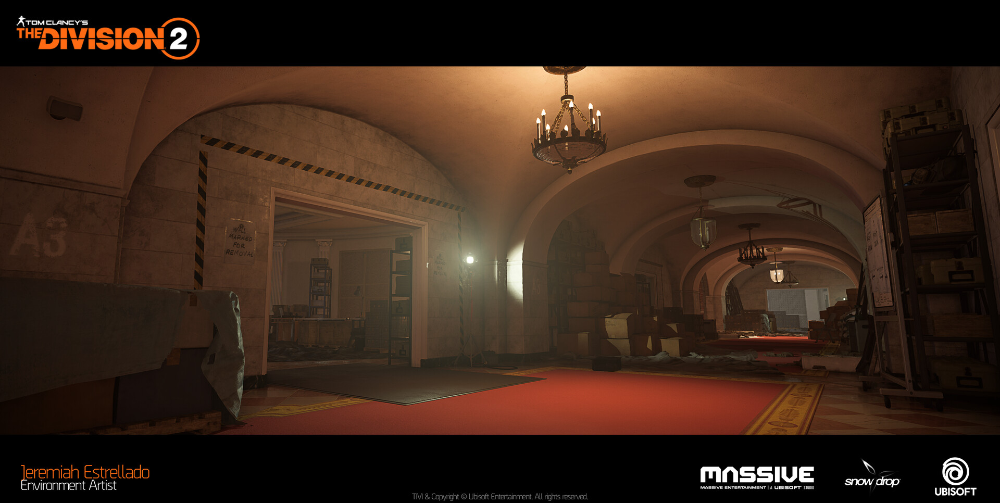
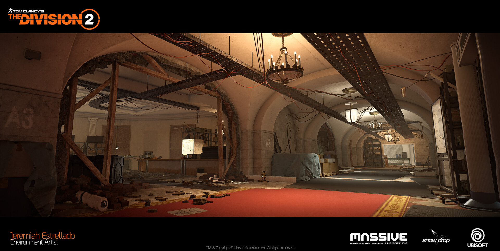
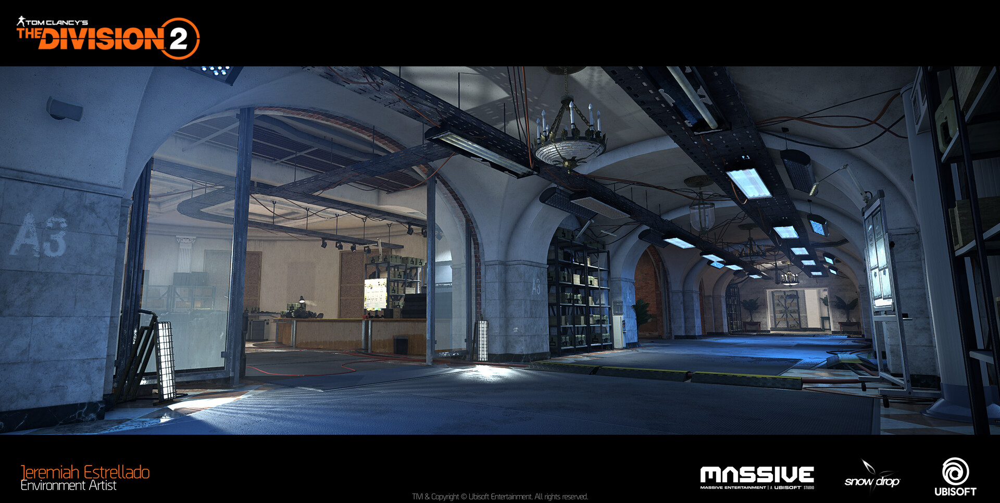
The Lobby
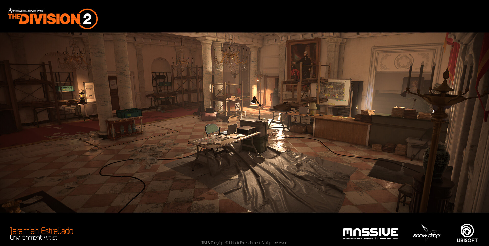
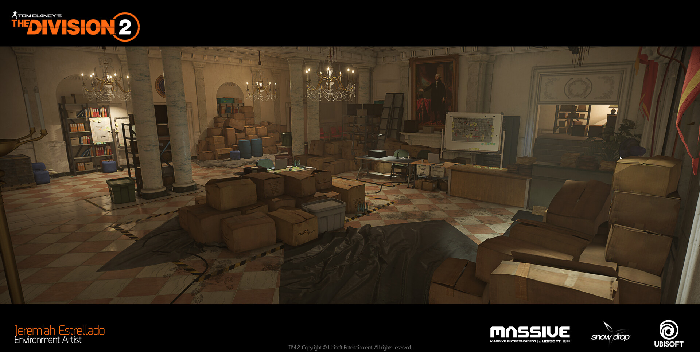
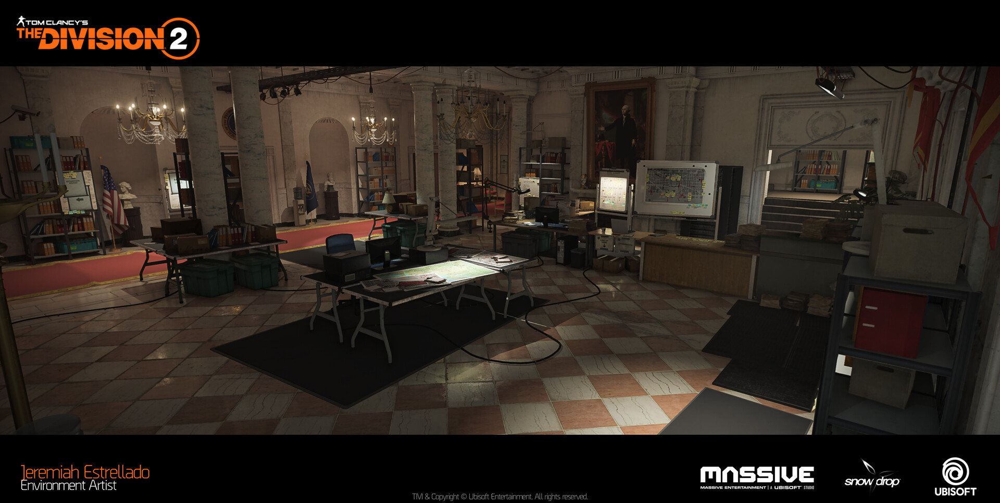
Hallway to the Situation Room
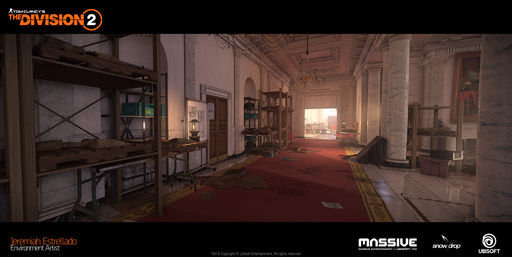
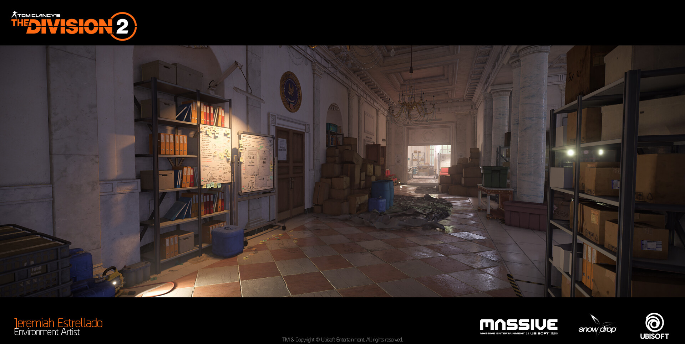
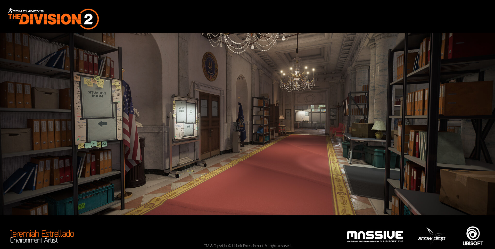
Base of Operations Nodes
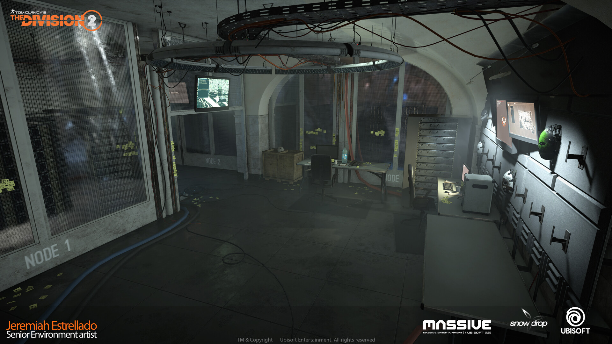
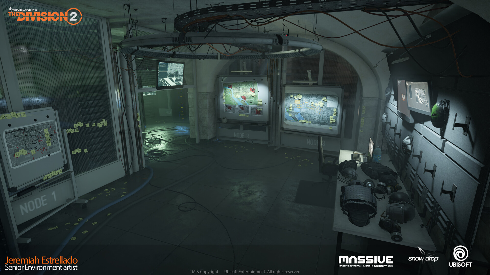

PC, PlayStation 4, Xbox One